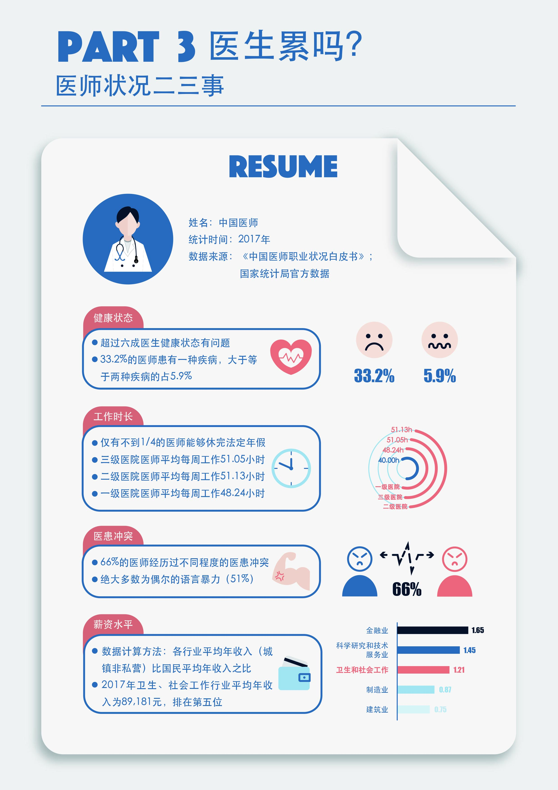

----Tips: This page contains many images, please wait a few seconds for loading----
Introduction
Unignorable Facts on Healthcare System in China
- Mentor: Fang Liu
- Partner: Shuyu Lin
- Won as top 2 in National Visualization of Info Contest 2019
Why chose this topic
- Healthcare has been always a focus in social welfare; amid fierce dispute throughout decade-long denationalization reform in healthcare and pharmacology industry, little attention has been paid to the insiders in China. We did this project with the aim of promoting public awareness of how much our healthcare system has been burdened with, and what we should do as taxpayers and benefiter.
Design Ideas
- Goal: Select crucial but often ignored aspects closely related to our daily life. Further bullet points will be addressed accordingly
- Illustration: Histogram, line chart, contradistinction and tendency
- Style: Card layout, flat design
Modification process
To better illustrate the severity of issues in our healthcare system, we made a great effort to this work. Take the fourth section of part 2 as an example. In this section, statistics in the year of 2017 showed that 42% of outpatients and 77% of inpatients chose to go to hospitals for treatment, and the number of hospitals accounted for only 3% of the total number of medical and health institutions. The appallingly gigantic gap between healthcare need and supply is contrasted here. It seems like this information was not complex, but illustrate this contrast clearly was a big challenge. We made 2 versions, tried different visualization methods and color palette, and it was apparent that the last version was the best.

In this version, readers can know that the number of hospitals accounted for only 3% of the total number of medical and health institutions, and 42% of outpatients and 77% of inpatients chose to go to hospitals for treatment. But, there is not significant difference between three rectangles, which represent medical & health institutions, inpatients and outpatients respectively. The type of statistics about patients is different from the type of statistics about medical and health institutions. These two types of statistics should be presented by different figures. Besides, the total number of outpatients is larger than the ones of inpatients, however, this information is not visualized.

Different from the former version, we used human icons to represent patients, used different color to represent outpatients and inpatients, used different buildings icons to represent hospitals and primary medical & health institutions, used trapezoids to show 42% of outpatients and 77% of inpatients chose to go to hospitals, and other parts chose to go to primary medical & health institutions. This version contains more comprehensive information, more types of statistics and more distinct contrast.
Structure of this work
Introduction
In this part. We briefly introduce the content and purpose of this work by coming up with three questions. They are “How expensive it is to get seen?”, “How convenient it is to get treated?” and “How burdened are our healthcare workers”, followed by epilogue to appeal awareness and synergetic solution.

Part 1
The topic of part 1 is about out-of-pocket burden of patients in China. This part answers this question from five perspectives. They are outpatient cost per capita and hospital expenses per capita from 2014 to 2018, outpatient cost per capita and hospital expenses per capita in China and other three countries in 2017, the ratio of medical expenditure per capita to disposable income per capita of these four countries in 2017, and our medical insurance system.

Part 2
Part 2 consists of five sections, on the topic of severe gap of need and supply of healthcare resources. The number of medical and health personnel, the number of medical and health institutions and the number of patients from 2014 to 2017, the distribution of patients in medical health institutions and the distribution of medical and health institutions in 2017. We try to use these sections to answer “Is it inconvenient for us to get treatment?”
Part 3
This part describes the doctors’ working environment by showing four kinds of statistics. They are doctors’ health, working hour, conflicts with patients and salary. We want to use these statistics to answer the question-"are doctors tired?”
Epilogue
In this section, we briefly summarize the current situation of medical industry in China and call on that everyone could take a rational view of the current situation.